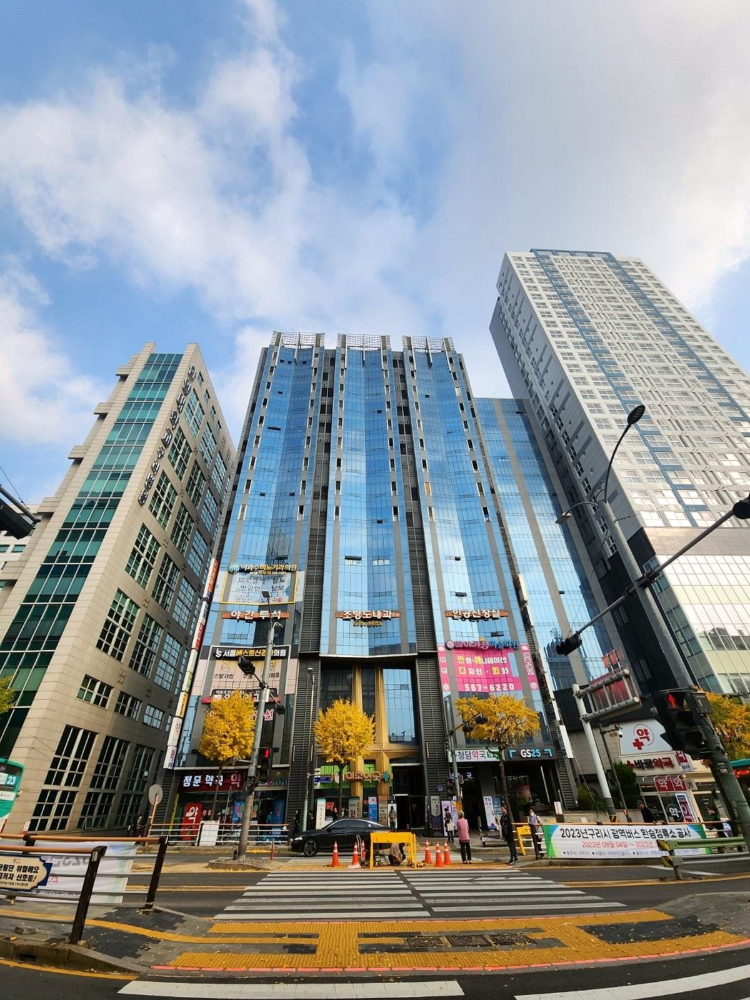
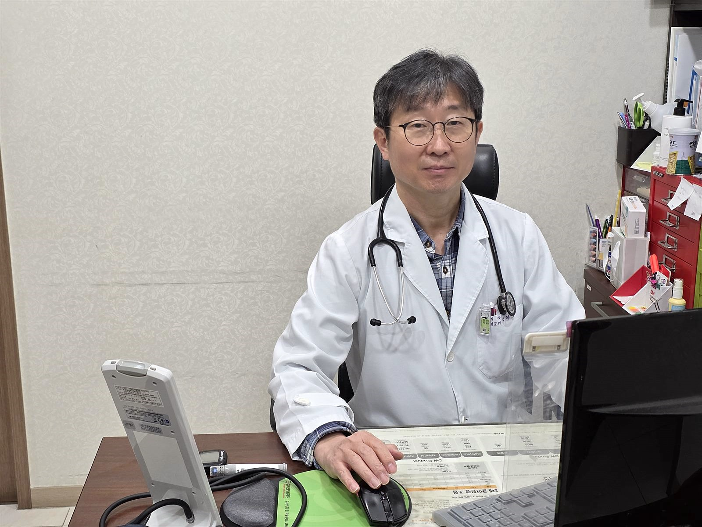

- 홈
- 병원소개
구리에서 오랜 기간 혈액투석을 이어온
신장내과 의원, 조형도내과
투석은 환자와 의료진이 몇 년을 함께 가는 치료입니다.
조형도내과의원은 신장내과 전문의가 진료하고, 대학병원과 같은 독일 FMC 투석기로 인공신장실을 운영합니다.

인사말
여러분의 평생 주치의가 되겠습니다
안녕하세요. 조형도내과의원 원장 조형도입니다. 저희 홈페이지를 찾아주셔서 진심으로 감사드립니다.
저희 병원은 구리에서 오랜 기간 혈액투석을 이어온 신장내과 의원으로, 만성콩팥병의 원인이 되는 당뇨·고혈압·고지혈증 등 성인병 진료를 함께 하고 있습니다. 서울아산병원·서울대병원·고려대병원·세브란스병원 등 다수 대학병원에서 사용하는 독일제(FMC) 혈액여과투석기로 전면 교체하였고, 추가 비용 없이 혈액여과투석(HDF)을 시행하고 있습니다.
늘 여러분과 가까이에서 보다 편리하고 편안한 진료를 제공함으로써 여러분의 평생 주치의가 되고자 하는 마음가짐으로 진료에 임하겠습니다. 언제나 여러분의 궁금증과 상담에 친절하고 열린 마음으로 답변해 드리겠습니다.
조형도내과의원 원장 조형도
병원 개요
한눈에 보는 조형도내과의원
- 병원명조형도내과의원 (Cho Hyungdo Internal Medicine)
- 진료과목내과 (신장내과) · 혈액투석 인공신장실
- 대표자조형도 (신장내과 전문의)
- 주소경기도 구리시 경춘로 163, 구리노블하임오피스텔 4층 (교문동 245-8)
- 대표전화031-565-9053 · 인공신장실 직통 031-565-9051~2 · FAX 031-565-9050
- 진료시간월·수·금 09:00–19:00 · 화·목 09:00–17:00 · 토 09:00–13:00 · 점심 13:00–14:00
- 인공신장실총 41병상 · 연중무휴 운영 · 야간투석 월·수·금 23:00까지
- 주요 장비독일 FMC 5008S 혈액여과투석기(전 병상), 건체중 측정기, 열탕 소독 정수 시스템, 원적외선 치료기
- 진료협력서울아산병원 진료협력병원
- 주요 이용 지역구리시 전역, 남양주(다산·도농·별내·퇴계원·진접), 서울 중랑구(망우·상봉·신내·면목)
- 연혁2009년 국내 개인의원 최초 독일 FMC 혈액여과투석기 전면 도입 · 2010년 1월 HDF 전 환자 무료 시행 · 2023년 최신형 FMC 5008S 전면 교체
- 블로그blog.naver.com/chdkdy9053
오시는길
구리역 인근, 경춘로 대로변
구리역 인근, 경춘로 대로변
구리노블하임오피스텔 4층
- 주소경기도 구리시 경춘로 163, 구리노블하임오피스텔 4층 (교문동 245-8)
- 지하철 · 버스경의중앙선 구리역 도보권 · 시내버스 1, 1-4, 10-5, 10-6, 15, 165, 166-1, 167, 167-1번
- 주차건물 주차장 이용 가능 (방문 전 전화 확인)